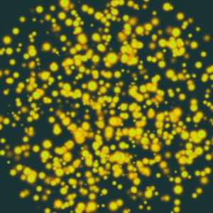
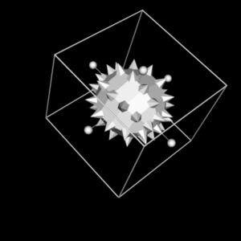
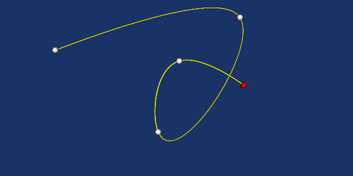
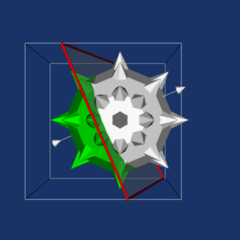
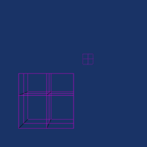
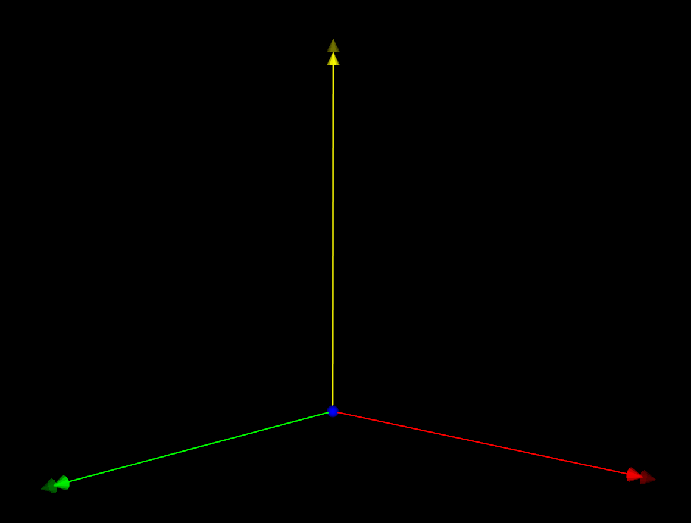

9.2#
Released on 2022-09-27.
9.2.0 Release Notes#
Changes made since VTK 9.1.0 include the following.
Changes {#changes}#
Build {#build}#
The
VTK_USE_MPIandVTK_USE_TKoptions are more lenient and will not force any modules in theMPIorTkgroup, respectively, to be built. Instead, affected modules may be disabled if they are unwanted.VTK’s packages now hint OpenVR locations (for the build tree or
VTK_RELOCATABLE_INSTALL=OFFinstallations).Installation destinations for Python modules is now fixed under MinGW.
Compile fixes for older compilers, mainly GCC 4.8.
Core {#core}#
vtkVector’s+=and-=operators now return avtkVector&as expected. Previously they returned uninitializedvtkVectorinstances which is of little use to anyone.vtkSetGet.hmacros which create setters now have*Overridevariants to use theoverridekeyword instead of repeatingvirtual.vtkObjectinstances may now be assigned a name used in reporting. It is not copied byShallowCopyorDeepCopycopies.vtkAbstractArray::CreateArraynow prefers creating sized integer arrays rather than arrays of basic C types. This is intended to help readers get the correct size instead of having to remember whetherlongis 32 or 64 bits on the given platform.
Data {#data}#
The
vtkArrayListTemplatehelper class forvtkDataSetAttributesincorrectly held avtkDataArray*. This meant that filters using the class could not support other arrays such asvtkStringArray. Now, it holds avtkAbstractArray*to support these types. Users may adapt by usingvtkArrayDownCastto obtain avtkDataArray*if needed.
Filters {#filters}#
vtkArrayCalculator,vtkmodules.numpy_interface.dataset_adapter, andvtkProgrammableFiltersupport forvtkHyperTreeGridhas been improved.vtkUnstructuredGridQuadricDecimation::NO_ERRORhas been renamed to::NON_ERRORto avoid conflicts with Microsoft Windows SDK headers.vtkImprintFilter::ABSOLUTEhas been renamed to::ABSOLUTE_TOLERANCEto avoid conflicts with Microsoft Windows SDK headers.vtkMeshQualityandvtkCellTypesnow use aenum class QualityMeasureTypesinstead of#definesymbols for metrics.vtkCheckerboardSplatterno longer has nested parallelism.vtkmProbefilters now return probed fields as point data rather than cell data.vtkDescriptiveStatistics’s Kurtosis formula had a mistake which is now corrected.vtkDescriptiveStatisticspreviously supported toggling kurtosis, skewness, and variance over sample or population individually. Now, sample or population can be selected using theSampleEstimateboolean (on by default). This simplifies interactions with the filter and avoids confusion by mixing and matching. The previous APIs still exist, but do not do anything.vtkPlaneCutternow frees the sphere trees if the input changes and can handlevtkUniformGridAMRinputs.vtkPlaneCutternow usesvtkAppendPolyDatainternally to merge internal results. This avoids complexvtkMultiBlockDataSetinputs from creating complicated sets ofvtkMultiPieceDataSet. Inputs and outputs are now transformed as follows:vtkMultiBlockDataSetinput becomesvtkMultiBlockDataSetvtkUniformGridAMRinput becomesvtkPartitionedDataSetCollection(previouslyvtkMultiBlockDataSet)vtkPartitionedDataSetCollectioninput becomesvtkPartitionedDataSetCollectionvtkPartitionedDataSetinput becomesvtkPartitionedDataSetvtkDataSetinput becomesvtkPolyData(previouslyvtkPartitionedDataSet)
vtkCellTreeLocatorhas moved fromVTK::FiltersGeneraltoVTK::CommonDataModelvtkArrayCalculatorno longer callsModified()on any value setting because it causes multi-threaded contention.The
vtkArrayRenamefilter may be used to rename data arrays within a data set.vtkGeometryFilterno longer supports thevtkUnstructuredGrid::FastModeusing theDegreeflag.vtkTemporalDataSetCacheno longer crashes when a nonexistent timestep is requested.vtkTableFFTno longer prefixes output array names with “FFT_” like it was in 9.1 and just keep the same name as the input like it was doing before 9.1. A new API has been added to keep 9.1 behavior when needed.vtkContourTriangulatorpolygon bounds checking now factors in the tolerance.vtkImageDifferencecalculations have been fixed. Note that this may affect testing results.vtkLagrangianParticleTrackercaching invalidation logic fixed.
Interaction {#interaction}#
vtkFrustumSelectionhas been optimized.Selection extraction on
vtkUniformGridAMRhas been fixed.
I/O {#io}#
The
vtkIOSSReadernow providesDisplacementMagnitudeto scale point displacement.The
vtkIOSSReadernow turns off theLOWER_CASE_VARIABLE_NAMESIOSS property.vtkIOSSReadernow reads side sets correctly by avoiding a false positive hit in its internal cache.FFmpeg 5.0 is now supported.
vtkXdmfReaderno longer caches internalXdmfGridinstances to avoid wasting memory. See #19633.vtkJSONSceneExporterno longer overwrites existing files.vtkGLTFExporternow exports the correct camera transformation matrix. Imported scenes may usevtkGLTFImporter::SetCamera(0)prior toUpdate()to use the original camera location.vtkPLYWritermay now write the point normals of input meshes, if present.vtkPIOReadernow requires dump files to begin with the problem name. This avoids using an unrelated file for partially written dumps.vtkNetCDFCAMReadernow properly extracts level data.
Rendering {#rendering}#
vtkProp3Dactors may now be added using different coordinate frames:WORLD(the default),PHYSICAL(in VR, the physical room’s coordinates, in meters), andDEVICE(relative to the device). When usingPHYSICALorDEVICE, a renderer must be provided via the newSetCoordinateSystemRenderer()andSetCoordinateSystemDevice()methods. Such props should typically useUseBoundsOff()to ignore their bounds when resetting the camera.Unstable volume rendering configurations are detected.
Volume rendering now supports more than 6 lights.
vtkXOpenGLRenderWindowandvtkXRenderWindowInteractornow properly disconnects from the display when it is not owned.Add a missing GIL lock in
vtkMatplotlibMathTextUtilities.Avoid a hard-coded translation when resetting the camera in VR.
Python {#python}#
SDKs for each weekly wheels are now available on
vtk.org. Releases will also have them available.vtkmodules.qtnow supports PyQt6.Python 3.10 is now supported by
vtkpython.Python 3.10 wheels are now supported.
VTK’s wrapped classes may now be interposed by using the class’
overridedecorator:
from vtkmodules.vtkCommonCore import vtkPoints
@vtkPoints.override
class foo(vtkPoints):
pass
o = vtkPoints() # o is actually an instance of foo
Note that Python subclasses still cannot override C++
virtualfunctions, cannot alter the C++ class hierarchy, is global, and is ignored when the class usesvtkObjectFactoryto provide a subclass from its::New()method..pyifiles for autocompletion and hinting in editors are now available in VTK builds and wheels. Note that Windows wheels older than 3.8 do not provide.pyifiles for platform-specific reasons.Starting with 9.2.3, Python 3.11 is supported and newly-deprecated APIs are avoided.
Starting with 9.2.3, Matplotlib 3.6 is now supported.
Starting with 9.2.3,
vtk[web]is required to get web dependencies with the wheels.
Web {#web}#
Fix a memory leak in
vtkWebApplication.The render window serializers were updated to better map VTK options to VTK.js options. This includes font coloring for scalar bars and color transfer function discretization.
vtkDataSetSurfaceFilteris used in place ofvtkGeometryFilterThe generic mapper serializer now uses
vtkDataSetSurfaceFilterto always extract a surface from the input dataset.Python
printstatements were changed to DEBUG logging statements.
Third Party {#third-party}#
VTK’s vendored HDF5 library has been updated to 1.13.1.
VTK’s vendored
verdictlibrary has been updated.VTK’s vendored
freetypelibrary has been updated to 2.12.0.VTK’s vendored
mpi4py’s Cython updated to support Python 3.11.Avoidance of deprecated APIs in new FFmpeg releases.
VTK’s vendored
libprojbetter supports cross-compilation.
Infrastructure {#infrastructure}#
Modules may now specify license files for the module in their
vtk.modulefile. It will automatically be installed.
New Features {#new-features}#
Animation {#animation}#
Animations may now be played in reverse using
vtkAnimationCue’s direction tovtkAnimationCue::PlayDirection::BACKWARD
Build {#build}#
When
VTK::AcceleratorsVTKmFiltersis enabled, theVTK_ENABLE_VTKM_OVERRIDESoption may be turned on to provide factory overrides for other VTK filters. Note that for these overrides to be used, the relevant VTKm modules must be linked (for C++) or imported (for Python) to be effective.
Core {#core}#
vtkMath::Convolve1Dcan be used to compute the convolution of two 1D signals usingfull,same, orvalidboundary conditions.vtkReservoirSamplermay be used to perform reservoir sampling. It is intended for selecting random fixed-size subsets of integer sequences (e.g., array indices or element IDs).
Charts {#charts}#
The parallel coordinates chart now supports multiple selections on the same axis. This includes addition, subtraction, and toggle actions.
Filters {#filters}#
The
vtkGenerateTimeStepsfilter may be used to add timesteps to shallow-copied data within a pipeline.The
vtkHyperTreeGridGradientfilter may be used to compute a gradient over a scalar field. The edges of the dual is used, so all neighbors are considered, but coarse cells are ignored.The
vtkExtractParticlesOverTimefilter may extract particles over time that pass through a given volumetric dataset.vtkMultiObjectMassPropertiesnow also computes the centroids of each object. Centroids are calculated using tetrahedron centroids and uniform density.vtkJoinTablesmay perform a SQL-styleJOINoperation on twovtkTableobjects. The columns to keep depend on the mode:intersection(keep columns common to both tables),union(keeps columns present in either table), andleftandright(keeping the keys present in the respective input table).vtkComputeQuantileshas been split out ofvtkComputeQuartilesas a new superclass. It supports arbitrary numbers of buckets.vtkMeshQualityandvtkCellQualityhave:been multithreaded
improved documentation
no longer supports the
AspectBetatetrahedron metricimproved pyramid cell metrics:
EquiangleSkewJacobianScaledJacobianShapeVolume
improved wedge cell metrics:
ConditionDistortionEdgeRatioEquiangleSkewJacobianMaxAspectFrobeniusMaxStretchMeanAspectFrobeniusScaledJacobianShapeVolume
new triangle cell metrics:
EquiangleSkewNormalizedInradius
new quadrilateral cell metrics:
EquiangleSkew
new tetrahedron cell metrics:
EquiangleSkewEquivolumeSkewMeanRatioNormalizedInradiusSquishIndex
new hexahedron cell metrics:
EquiangleSkewNodalJacobianRatio
The new
vtkLinearTransformCellLocatoris a cell locator adaptor which can calculate a transformation matrix from a base dataset to another dataset. This matrix is then used to perform cell locator operations. TheUseAllPoints()method may be used to use either all dataset points (if the transformation might not be linear) or, at most, 100 sample points sampled uniformly from the dataset’s point array.vtkCellLocator,vtkStaticCellLocator,vtkCellTreeLocator,vtkModifiedBSPTree, andvtkLinearTransformCellLocatoreach have numerous improvements:support for
ShallowCopy()caching cell bounds has been multithreaded
InsideCellBoundschecks are now cachednew
IntersectWithLinemethods sorted by a parametrict; this also providesFindCellsAlongLinefor each locatorthe
toleranceparameter may be used to check cell bound intersectionsThe
UseExistingSearchStructureparameter may be used to not rebuild locators when component data changes, but the geometry stays the same; useForceBuildLocatorto rebuild as needed in this case
vtkCellTreeLocatorsupports 64bit IDs.vtkCellTreeLocator::IntersectWithLine()andvtkModifiedBSPTree::IntersectWithLine()are now thread-safe.vtkCellLocatoris now fully thread-safe.The
vtkAlignImageDataSetFilterhas been added which can align image datasets to share a single global origin and offset extents in each component image accordingly. All images must use the same spacing.The new
vtkLengthDistributionfilter may be used to estimate the range of geometric length scales preset in avtkDataSet.vtkImageMathematicscan now perform operations on more than two images. Rather than connecting a second image to port 1, all connections are made to port 0 instead. This unifies behavior with other repeatable image filters such asvtkImageAppend.VTKm’s
vtkmContourfilter may be used as a factory override forvtkContourFilter.VTKm filter factory overrides may be toggled using
vtkmFilterOverrides::SetEnabled().The
vtkExtractHistogramfilter has been moved from ParaView into VTK.vtkPointDataToCellDatanow handles categorical data using multiple threads.vtkSuperquadricSourcenow creates pieces using multiple threads.Particle traces now support
vtkDataObjectTreeobjects to define seed points rather than onlyvtkDataSetobjects.vtkStreamTracernow uses SMP when multiprocessing is not in use.vtkStreamTracerperformance and quality have been improved.vtkFindCellStrategy::FindClosestPointWithinRadius()has been added.vtkCompositeInterpolatedVelocityField::SnapPointOnCell()has been refactored from thevtkInterpolatedVelocityFieldandvtkCellLocatorInterpolatedVelocityFieldsubclasses.vtkParticleTracerBaseis now multithreaded (with one MPI rank or more than 100 particles).vtkParticleTracerBasecan now use either use a cell locator (the default) or point locator for interpolation.vtkParticleTracerBasesupports different levels of mesh changes over time:DIFFERENT: the mesh changes on every timestep.SAME: the mesh is the same on every timestep.LINEAR_TRANSFORMATION: the mesh is a linear transformation of the prior timesteps (partially applies to point locators as only cell links are preserved).SAME_TOPOLOGY: the mesh data changes, but its topology is the same every timestep (only applies to point locators).
vtkTemporalInterpolatedVelocityFieldcan now use theFindCellStrategybecause it now preserves higher numerical accuracy internally.vtkGeometryFilteris now multi-threaded over more data types including:vtkUnstructuredGridvtkUnstructuredGridBasevtkImageData(3D)vtkRectilinearGridvtkStructuredGrid
vtkGeometryFiltercan now handle ghost and blank cells and points.vtkGeometryFiltercan now remove ghost interfaces using theRemoveGhostInterfacesflag (default on).The
vtkFiniteElementFieldDistributorfilter can now visualize Discontinuous Galerkin (DG) finite element fields of typeH(Grad),H(Curl), andH(Div).Note that all cells must be of the same type and the field data must contain a
vtkStringArraydescribing the DG fields, basis types, and reference cells.
Interaction {#interaction}#
vtkDisplaySizedImplicitPlaneWidgetis now provided. Compared tovtkImplicitPlaneWidget2:the outline is not drawn by default
the intersection edges of the outline and the plane may be drawn
the normal arrow and plane size are relative to the viewport
their sizes may be bounded by the widget bounds
the origin may be moved freely rather than constrained to the bounding box
the handle sizes are larger
the plane is represented as a disc
the only option for the perimeter is to be tubed or not
the perimeter may be selected and resized to change the disc radius
the actors are highlighted only when hovered
except the plane surface which is highlighted when any actor is hovered over
a new plane origin may be picked using
Porpthe
ctrlmodifier will snap to the closest point on an object or the camera plane focal point otherwise
a new plane normal may be picked using
Nornthe
ctrlmodifier will snap to the closest normal on an object or the camera plane normal otherwise
picking tolerance is relative to the viewport size
vtkResliceImageViewermay now apply a factor when scrolling.vtkResliceCursorWidgetLineRepresentationsupportsalt+leftclickto translate along a single axis.vtkVRInteractorStylenow supports theGroundedmovement style. The existing movement style is calledFlying.Groundedmovement is constrained to anxyplane in four directions on one joystick. The other joystick changes elevation.vtkSelectionnow supports thexorboolean operator.vtkSelectionSourcenow supports multiple selection nodes.vtkSelectionSourcemay now define the field option using eitherFieldTypeorElementType.vtkSelectionSourcenow defines theProcessIdof the selection.vtkAppendSelectioncan now append multiple selections through an expression using selection input names.vtkConvertSelectionmay now convertBLOCKandBLOCK_SELECTORSnodes toINDICES.
I/O {#io}#
vtkFidesReaderreader can now use theInlineengine for in-situ processing.vtkCatalystConduitmay be used to adapt Conduit datasets via the Catalyst library’s conduit interactions. This module requires an externalcatalystlibrary to be provided. This module includes:vtkConduitSource: a source filter which generates avtkPartionedDataSetorvtkPartitionedDataSetCollectionfrom a Conduit node (it may also generatevtkMultiBlockDataSetif needed for historical reasons).vtkDataObjectToConduitto convert anyvtkDataObjectinto a Conduit nodea Catalyst implementation
The
vtkHDFReaderfilter now supports overlapping AMR datasets. The specification can be found in the VTK File Formats documentation.vtkCGNSReadernow support reading cell- or face-centered data arrays for meshes with 3D cells. Note that connectivity must be defined usingNGON_nin face-based meshes. Data arrays are then defined with aGridLocation_tof eitherCellCenterorFaceCenter. The behavior may be selected by settingvtkCGNSReader::DataLocationtovtkCGNSReader::CELL_DATA(the default and previous behavior) orvtkCGNSReader::FACE_DATA.vtkPIOReadercan now read restart block and even/odd dumps.vtkPIOReaderwill now add thexdt,ydt,zdt, andrhoderived variables and calculate them if they are not already present in the restart file.vtkIOSSReadernow caches time values internally to avoid filesystem contention on HPC systems.The new
vtkIOSSWritercan write Exodus files using the IOSS library. For now, only element blocks, node sets, and side sets are supported.
Qt {#qt}#
QVTKTableModelAdaptermay be used to provide aQAbstractItemModelmodel as avtkTableto use in a pipeline.
Rendering {#rendering}#
Basic OpenXR support is supported for virtual reality rendering.
The
vtkHyperTreeGridMappermapper may be used to render only visible parts of avtkHyperTreeGridin 2D.Rendering point sets may now use OSPRay’s “Particle Volume” when using
vtkPointGaussianMapper’s ray tracing backend.vtkColorTransferFunction::AddRGBPointsmay now be called with points and colors in batches for much better performance.The
WindowLocationAPI has moved fromvtkTextRepresentationtovtkBorderRepresentationso that it can be used by more classes.Volumetric shadows is now supported which allows for a volumetric model to cast shadows on itself. Requires volumetric shading to be enabled. An illumination reach parameter controls how accurate the shadows will be,
0meaning only local shadows and1for shadows across the entire volume.

Interactive rendering of most widgets are now supported with OSPRay.




Widgets {#widgets}#
The
vtkCoordinateFrameWidgetcontrols 3 orthogonal right-handed planes. Axes are rendered proportionally to the viewport size (and is configurable). Interaction may pick a basis point and choose alignment with a surface normal or another point. See this Discourse thread for discussion.vtkHardwarePickermay be used to pick a point and normal by intersection with a mesh cell or nearest mesh point.

Testing {#testing}#
The
vtkHyperTreeGridPreConfiguredSourcemay be used to generate differentvtkHyperTreeGriddatasets for testing purposes instead of hand-crafting them.
Wrapping {#wrapping}#
Wrapping tools now support Unicode command line arguments.
vtkSmartPointer<T>parameters and return values are now supported in wrapped Python APIs.std::vector<vtkSmartPointer<T>>is also supported by appearing as atuplein Python and conversion from any sequence when converting to C++.
Module System {#module-system}#
vtk_module_sourcesis now provided as a wrapper aroundtarget_sourcesfor VTK module targets.vtk_module_add_modulenow supports aNOWRAP_TEMPLATE_CLASSESkeyword for template classes which should not be wrapped.
Deprecated and Removed Features {#deprecated-and-removed-features}#
Legacy {#legacy}#
The following APIs were deprecated in 9.0 or earlier and are now removed:
vtkPlot::GetNearestPoint(const vtkVector2f&, const vtkVector2f&, vtkVector2f*)vtkPlot::LegacyRecursionFlag(used to help subclasses implement the replacement for the prior method)The following APIs have been replaced by
vtkOutputWindow::SetDisplayMode():vtkOutputWindow::SetUseStdErrorForAllMessages()vtkOutputWindow::GetUseStdErrorForAllMessages()vtkOutputWindow::UseStdErrorForAllMessagesOn()vtkOutputWindow::UseStdErrorForAllMessagesOff()vtkWin32OutputWindow::SetSendToStdErr()vtkWin32OutputWindow::GetSendToStdErr()vtkWin32OutputWindow::SendToStdErrOn()vtkWin32OutputWindow::SendToStdErrOff()
vtkArrayDispatcher,vtkDispatcher,vtkDoubleDispatcherhave been replaced byvtkArrayDispatchFetching edge and face points via
intrather thanvtkIdType:vtkConvexPointSet::GetEdgePoints(int, int*&)vtkConvexPointSet::GetFacePoints(int, int*&)vtkHexagonalPrism::GetEdgePoints(int, int*&)vtkHexagonalPrism::GetFacePoints(int, int*&)vtkHexahedron::GetEdgePoints(int, int*&)vtkHexahedron::GetFacePoints(int, int*&)vtkPentagonalPrism::GetEdgePoints(int, int*&)vtkPentagonalPrism::GetFacePoints(int, int*&)vtkPolyhedron::GetEdgePoints(int, int*&)vtkPolyhedron::GetFacePoints(int, int*&)vtkPyramid::GetEdgePoints(int, int*&)vtkPyramid::GetFacePoints(int, int*&)vtkTetra::GetEdgePoints(int, int*&)vtkTetra::GetFacePoints(int, int*&)vtkVoxel::GetEdgePoints(int, int*&)vtkVoxel::GetFacePoints(int, int*&)vtkWedge::GetEdgePoints(int, int*&)vtkWedge::GetFacePoints(int, int*&)
Querying point cells with an
unsigned shortcount of cells:vtkPolyData::GetPointCells(vtkIdType, unsigned short&, vtkIdType*&)vtkUnstructuredGrid::GetPointCells(vtkIdType, unsigned short&, vtkIdType*&)
vtkAlgorithm::SetProgress()has been replaced byvtkAlgorithm::UpdateProgress()The following APIs have been replaced by
vtkResourceFileLocator::SetLogVerbosity():vtkResourceFileLocator::SetPrintDebugInformation()vtkResourceFileLocator::GetPrintDebugInformation()vtkResourceFileLocator::PrintDebugInformationOn()vtkResourceFileLocator::PrintDebugInformationOff()
vtkIdFilter::SetIdsArrayName()has been replaced byvtkIdFilter::SetPointIdsArrayName()andvtkIdFilter::SetCellIdsArrayName()vtkExtractTemporalFieldDatahas been replaced byvtkExtractExodusGlobalTemporalVariablesvtkTemporalStreamTracerandvtkPTemporalStreamTracerhave been replaced byvtkParticleTracerBase,vtkParticleTracer,vtkParticlePathFilter, orvtkStreaklineFiltervtkHyperTreeGridSource::GetMaximumLevel()andvtkHyperTreeGridSource::SetMaximumLevel()have been replaced byvtkHyperTreeGridSource::GetMaxDepth()andvtkHyperTreeGridSource::SetMaxDepth()QVTKOpenGLNativeWidget,QVTKOpenGLStereoWidget,QVTKOpenGLWindowmethods have been removed:::SetRenderWindow()is now::setRenderWindow()::GetRenderWindow()is now::renderWindow()::GetInteractor()andGetInteractorAdaptor()have been removed::setQVTKCursor()is nowQWidget::setCursor()::setDefaultQVTKCursor()is nowQWidget::setDefaultCursor()
QVTKOpenGLWidgetis replaced byQVTKOpenGLStereoWidgetvtkJSONDataSetWriter::{Get,Set}FileName()is nowvtkJSONDataSetWriter::{Get,Set}ArchiveName()vtkLineRepresentation::SetRestrictFlag()has been removedThe following
vtkRenderWindowmethods have been removed:GetIsPicking()SetIsPicking()IsPickingOn()IsPickingOff()
The following APIs have been replaced by
vtkShaderPropertymethods of the same names:vtkOpenGLPolyDataMapper::AddShaderReplacement()vtkOpenGLPolyDataMapper::ClearShaderReplacement()vtkOpenGLPolyDataMapper::ClearAllShaderReplacements()vtkOpenGLPolyDataMapper::ClearAllShaderReplacements()vtkOpenGLPolyDataMapper::SetVertexShaderCode()vtkOpenGLPolyDataMapper::GetVertexShaderCode()vtkOpenGLPolyDataMapper::SetFragmentShaderCode()vtkOpenGLPolyDataMapper::GetFragmentShaderCode()vtkOpenGLPolyDataMapper::SetGeometryShaderCode()vtkOpenGLPolyDataMapper::GetGeometryShaderCode()
The following APIs have been removed (they supported the legacy shader replacements):
vtkOpenGLPolyDataMapper::GetLegacyShaderProperty()vtkOpenGLPolyDataMapper::LegacyShaderProperty
The following APIs have been removed since only
FLOATING_POINTmode is now supported:vtkValuePass::SetRenderingMode()vtkValuePass::GetRenderingMode()vtkValuePass::SetInputArrayToProcess()vtkValuePass::SetInputComponentToProcess()vtkValuePass::SetScalarRange()vtkValuePass::IsFloatingPointModeSupported()vtkValuePass::ColorToValue()
vtkPythonInterpreter::GetPythonVerboseFlag()has been replaced byvtkPythonInterpreter::GetLogVerbosity()vtkUnicodeStringandvtkUnicodeStringArrayhave been removed. ThevtkStringandvtkStringArrayclasses are now fully UTF-8 aware. UTF-16 conversion is no longer possible through VTK APIs.vtkVariantsupport for__int64andunsigned __int64has been removed. They have returnedfalsefor years.
Core {#core}#
vtkCellTypesno longer usesLocationArray. It was used forvtkUnstructuredGridbut is now stored with the class instead. As of this deprecation, all supported APIs are now onlystaticmethods.vtkUnstructuredGrid::GetCellTypesis deprecated. Instead,vtkUnstructuredGrid::GetDistinctCellTypesArrayshould be used to access the set of cell types present in the grid.vtkHyperTreeGrid::GetNumberOfVertices()is nowvtkHyperTreeGrid::GetNumberOfCells()to align with VTK’s usage of the terminology.Classes may now opt into the garbage collection mechanism by overriding the
UsesGarbageCollector()method to returntrueinstead of via theRegister()andUnRegister()methods.vtkCriticalSectionis deprecated.vtkCriticalSectionwas intended to be deprecated in VTK 9.1.0, but a warning was never added to it. VTK now has the warning present as it was originally intended.
Filters {#filters}#
vtkChemistryConfigure.hhas been deprecated. It previously only provided information to VTK’s test suite which is now routed internally instead. There is no replacement and any usage can simply be removed.vtkMFCConfigure.hhas been deprecated. It used to provide information used during the module’s build that is now passed through command line flags instead. There is no replacement and any usage can simply be removed.vtkMeshQuality’s mechanism to run the filter in legacy mode is deprecated. In particular theCompatibilityModeandVolumemembers are no longer necessary with the new mode and should not be used anymore.vtkMeshQualitymethod renames:SetQuadQualityMeasureToMaxEdgeRatiostoSetQuadQualityMeasureToMaxEdgeRatioSetHexQualityMeasureToMaxEdgeRatiostoSetHexQualityMeasureToMaxEdgeRatioQuadMaxEdgeRatiostoQuadMaxEdgeRatioTetShapeandSizetoTetShapeAndSize
vtkDescriptiveStatistics::UnbiasedVariance,vtkDescriptiveStatistics::G1Skewness, andvtkDescriptiveStatistics::G2Kurtosisare now deprecated in favor of a singlevtkDescriptiveStatistics::SampleEstimateinstead.vtkCellLocator,vtkStaticCellLocator,vtkCellTreeLocator,vtkModifiedBSPTree, andvtkLinearTransformCellLocatorall have deprecated theirLazyEvaluationflag due to thread-safety issues.BuildLocatorIfNeededis also deprecated for those that supported it.vtkStaticCellLocator:UseDiagonalLengthTolerance()has been deprecated because it no longer usesTolerance.vtkParticleTracerBase::StaticMeshis deprecated in preference tovtkParticleTracerBase::SetMeshOverTime(an enumeration rather than a boolean).vtkCachingInterpolatedVelocityField,vtkCellLocatorInterpolatedVelocityField, andvtkInterpolatedVelocityFieldfilters have been deprecated. Instead, use:vtkCellLocatorInterpolatedVelocityFieldbecomesvtkCompositeInterpolatedVelocityFieldwithvtkCellLocatorStrategy.vtkInterpolatedVelocityFieldbecomesvtkCompositeInterpolatedVelocityFieldwithvtkClosestPointStrategy.vtkCachingInterpolatedVelocityFieldbecomesvtkCompositeInterpolatedVelocityFieldwith the appropriate strategy.
Interaction {#interaction}#
vtkExtractSelectedThresholds,vtkExtractSelectedPolyDataIds,vtkExtractSelectedLocations,vtkExtractSelectedIds, andvtkExtractSelectedBlockcan now be replaced byvtkExtractSelection.vtkHierarchicalBoxDataIteratoris now deprecated in favor ofvtkUniformGridAMRDataIterator.
Rendering {#rendering}#
vtkOSPRayRendererNode::VOLUME_ANISOTROPY,vtkOSPRayRendererNode::GetVolumeAnisotropy(), andvtkOSPRayRendererNode::SetVolumeAnistropy()are deprecated in favor ofvtkVolumeProperty::SetScatteringAnisotropy()andvtkVolumeProperty::GetScatteringAnisotropy().